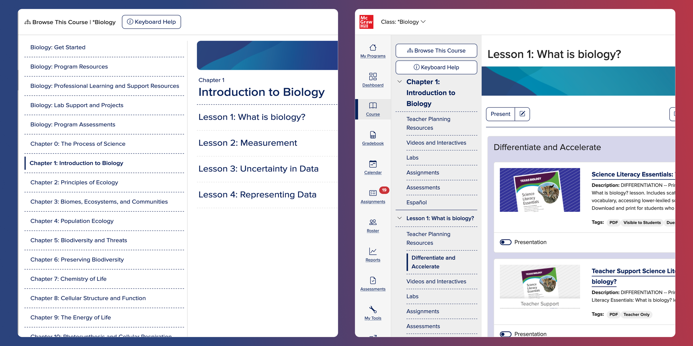
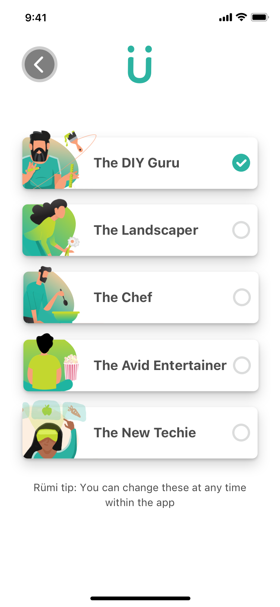
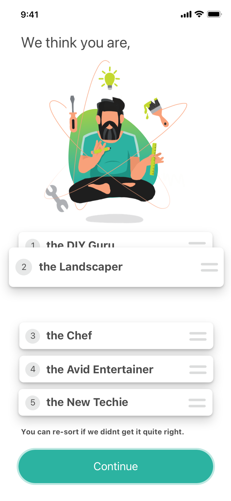
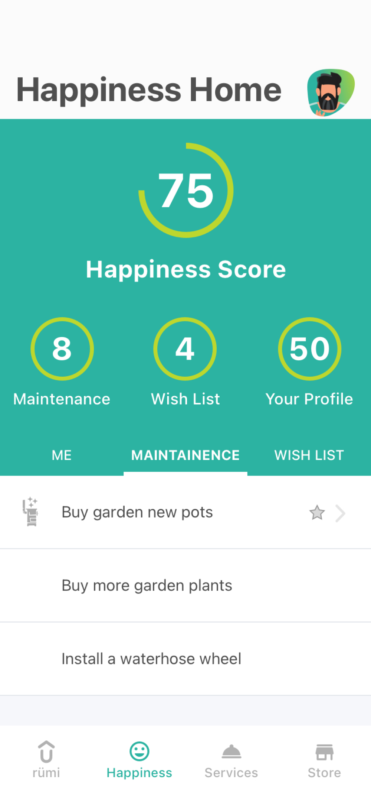
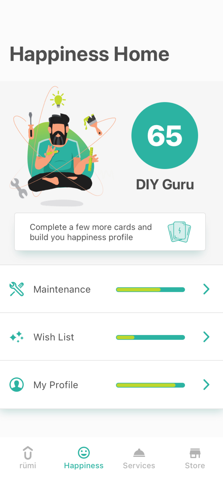

Simplifying content discovery for educators
View project →
Rümi · Home services, with ATCO
Tracking maintenance, planning improvements, and managing DIY projects can be overwhelming, especially for new homeowners. ATCO wanted a product that helped people stay on top of the work that comes with owning a home, while connecting them to trusted services in a way that felt useful, not intrusive.
Homeowners didn't approach the same problems in the same way. Some were comfortable taking on projects themselves. Others needed more guidance, reassurance, or help from a professional.
The experience needed to account for that difference without anything feeling heavy or over-engineered.

Persona selection gave users a way to define their comfort level, goals, and starting point up front.
That made it possible to shape the guidance around the person using the product, without forcing them into a rigid path or asking them to understand the whole system before getting value from it.


Initial concepts leaned toward gamification, but it quickly became clear that homeownership isn't something people want to win.
Progress isn't linear. Maintenance is recurring. Priorities change. Turning that into points, scores, or rewards made the experience feel disconnected from how people actually manage their homes.
The stronger direction was not to make the product more playful. It was to make it more useful.
People needed to understand what needed attention, what could wait, and what action made sense next.


The experience shifted toward a flexible, user-driven checklist that organized tasks into three clear categories. What to do next, routine maintenance, and longer-term goals.
Users could prioritize, complete, or dismiss tasks, letting the system adapt to their workflow instead of forcing them into one.
The goal wasn't to simplify homeownership. It was to make it easier to move through.
By giving people a clear structure without locking them into one path, the product could support different levels of confidence, urgency, and experience.

Each task gave users more than a reminder. It gave them context, instructions, relevant supplies, and a way to connect with trusted professionals when they needed help. The real gap wasn't between people and information. It was between knowing something needed attention and feeling ready to act on it.
Users could personalize the experience, organize tasks around their own priorities, and move from guidance to action without leaving the flow.
Homeowners generally know their home needs work. What stops them is not knowing where to start, whether they're capable of handling it, or what doing it wrong might cost them.
The design addressed that gap directly. Not by simplifying the work itself, but by making the path through it feel navigable. That was the problem worth solving, and the direction we landed on solved it.
